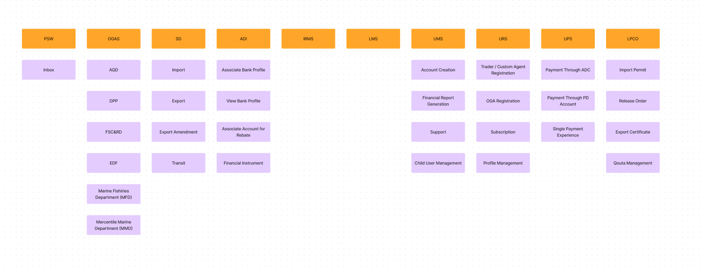

Introduction
To provide structural education, many universities in Pakistan make buying course books necessary. There are many formats in which these books are available, offering a thorough knowledge of a subject and also helping teachers in planning. They are available in stores, libraries, and various digital hubs at different costs.
Acquiring these books presents itself with a few problems which discourage students. To empathize and understand these problems and come up with a solution for them, I conducted interview sessions and documented the whole design process.
Phase 1 - Research
Everyone remembers buying books in their first year, but most of these books were now kept in their cupboards with no further use after their semester. A general statement we received while trying to dive deep into this problem was
"There is no need to buy a hard copy of the course material because there are PDFs available."
After doing a survey I found out that not everyone was inclined towards this idea and to be precise, out of 30 respondents during the interview, we found that 27 of the respondents have referred to the written course books once or more than one time.

Furthermore, I also found out that the majority of people who were either using the books every day or some days were mostly freshmen and sophomore students.
"Most of the students in the third and fourth year of their bachelor's program told us that the books they bought in the first year were still with them and that those books were of no use to them and they felt that they wasted their money."
Most of the students in the third and fourth year of their bachelor's program told us that the books they bought in the first year were still with them and that those books were of no use to them and they felt that they wasted their money.
Phase 2 - Converting insights into actions
At the end of research phase, we organized our findings using affinity diagram

We highlighted the following problems that were common in many of the interviews.
a. Unavailability of books
b. Cost of books
c. Quality of books
Afterwards, we held brainstorming sessions and general interviews with the students to gain their insights on what they think an optimal solution could be?

After getting a bunch of various ideas we came to three potential different ways to solve the problem.

We reflected on our original problem statement and picked a solution that would be able to cater to most, if not all, problems identified. We wrote user personas and designed the wireframes and mockups to visualize our solution.
Phase 3 - Execution
The Architecture
Initially, we created an information architecture to map out the main functions. This activity gave us an insight into the scale and user flows.
